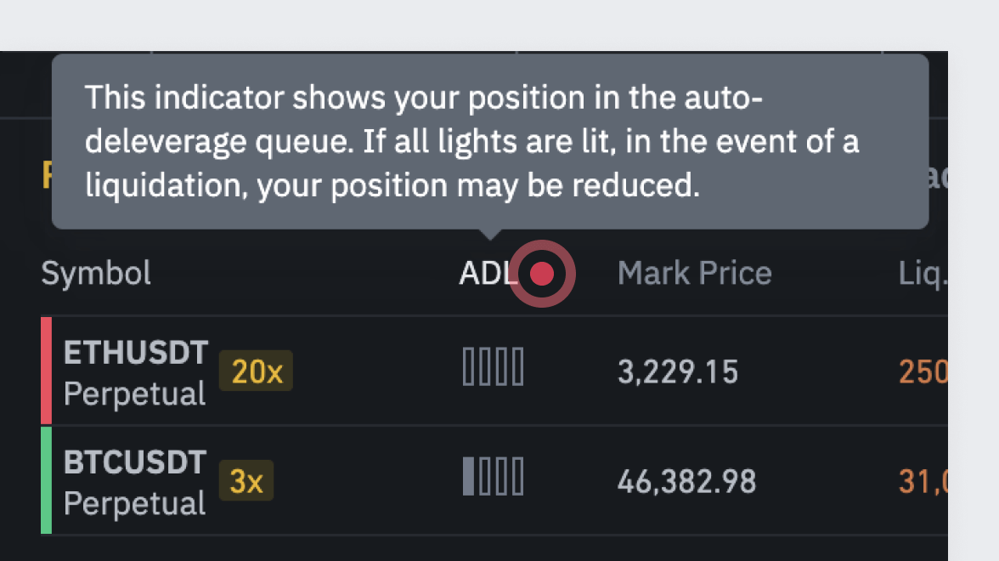
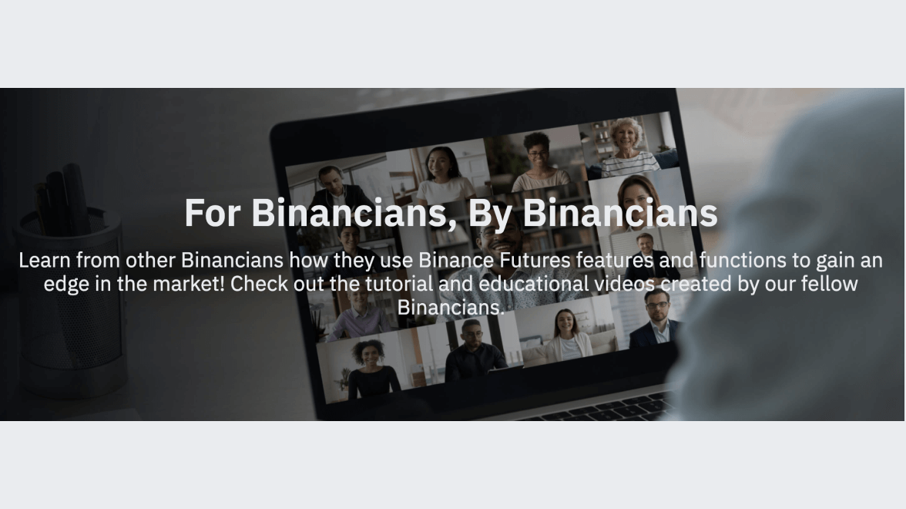

Giao dịch có trách nhiệm với Binance
Binance khuyến khích người dùng giao dịch có trách
nhiệm. Giao dịch có thể hấp dẫn và thú vị, nhưng giao dịch là công việc nghiêm túc và có thể
dẫn đến sự suy sụp về tinh thần và tài chính. Giao dịch phái sinh đi kèm rủi ro. Hơn nữa,
tiền mã hóa và các loại tài sản kỹ thuật số khác thường có mức độ biến động giá cao.

Giao dịch có trách nhiệm là kiểm soát các giao dịch của
bạn và chịu trách nhiệm về hành động của bạn. Giao dịch có trách nhiệm cũng có nghĩa là sự thừa
nhận khi hoạt động giao dịch có thể không phù hợp với bạn. Trader có trách nhiệm sẽ không làm gì
vượt quá khả năng của mình. Nói cách khác, đừng bao giờ bỏ ra nhiều hơn số tiền bạn có thể
mất.
Tại Binance, chúng tôi đã thiết lập một số tính năng và nguyên tắc để giúp người dùng giao dịch có trách nhiệm và đưa ra quyết định giao dịch sáng suốt. Dưới đây là một số mẹo và phương pháp hay giúp bạn trở thành một trader có trách nhiệm hơn:
Tại Binance, chúng tôi đã thiết lập một số tính năng và nguyên tắc để giúp người dùng giao dịch có trách nhiệm và đưa ra quyết định giao dịch sáng suốt. Dưới đây là một số mẹo và phương pháp hay giúp bạn trở thành một trader có trách nhiệm hơn:
Rèn luyện tính tự giác kỷ luật
Trong giao dịch, tự giác kỷ luật nghĩa là tự biết
tránh những hành vi thái quá không lành mạnh như nghiện giao dịch hoặc cờ bạc. Binance
khuyến khích người dùng rèn luyện tính tự giác kỷ luật, đặc biệt là khi người dùng cảm thấy
bị áp lực bởi thua lỗ hoặc thua lỗ liên tiếp.
Luôn rèn luyện bản thân
Binance đã không ngừng nỗ lực phổ biến kiến thức
cho người dùng về mọi khía cạnh của giao dịch tiền mã hóa, từ công nghệ cơ bản đằng sau tiền
mã hóa cho đến sự phức tạp của giao dịch phái sinh. Nội dung phổ biến kiến thức của chúng
tôi được cung cấp miễn phí trên Binance Academy, Binance Research, Binance Blog và phần hướng dẫn Câu hỏi
thường gặp.
Bảo vệ vốn của bạn
Quản lý rủi ro đóng vai trò quan trọng đối với
thành công của mọi trader. Quản lý rủi ro giúp bạn tránh bị thua lỗ quá nhiều và bảo vệ vốn
giao dịch của bạn. Trên giao diện giao dịch Binance, chúng tôi đã thiết lập các tính năng
quản lý rủi ro, chẳng hạn như lệnh cắt lỗ để giúp người dùng quản lý rủi ro trong các giao
dịch cá nhân. Tìm hiểu thêm về quản lý tiền và rủi ro trong bài đăng trên blog của chúng tôi.
Thông báo chống nghiện giao dịch
Binance đã thiết lập một số quy trình để nhắc
trader về hành vi giao dịch bốc đồng. Ví dụ: khi trader bị thua lỗ liên tiếp hoặc lỗ
nặng, chúng tôi sẽ liên tục nhắc họ về rủi ro liên quan đến giao dịch phái sinh và
khuyến khích họ tạm ngừng hoạt động giao dịch.
Là trader có trách nhiệm, bạn cần kiểm soát bản thân và đảm bảo có các quy trình để tránh những hành vi thái quá có hại như nghiện giao dịch hoặc cờ bạc.
Thông báo do hệ thống của chúng tôi tạo ra liên tục nhắc nhở người dùng về sự nguy hiểm của hành vi nghiện giao dịch và rủi ro liên quan khi giao dịch các sản phẩm phức tạp hơn, như các sản phẩm phái sinh.
Là trader có trách nhiệm, bạn cần kiểm soát bản thân và đảm bảo có các quy trình để tránh những hành vi thái quá có hại như nghiện giao dịch hoặc cờ bạc.
Thông báo do hệ thống của chúng tôi tạo ra liên tục nhắc nhở người dùng về sự nguy hiểm của hành vi nghiện giao dịch và rủi ro liên quan khi giao dịch các sản phẩm phức tạp hơn, như các sản phẩm phái sinh.
Hiện có:
Quyền chọn
Chức năng Thời gian tạm dừng
Future
Khi trader bị thua lỗ liên tiếp, việc lật
ngược tình thế và cắt lỗ có thể rất khó khăn. Trong những tình huống này, trader phải
biết khi nào nên dừng lại và tránh các hành vi nghiện giao dịch. Đôi khi, cách giao dịch
tốt nhất là không giao dịch gì hết.Nhằm khuyến khích tính tự giác kỷ luật và giao dịch có trách nhiệm, Binance đã ra mắt chức năng Thời gian tạm dừng để người dùng có thể tạm thời vô hiệu hóa các hoạt động giao dịch phái sinh và tránh hành vi nghiện giao dịch.
Ngay cả khi có tính năng này, trader vẫn phải tiếp tục tự thực hiện giao dịch có trách nhiệm, điều này đòi hỏi trader phải kiểm soát hoàn toàn các giao dịch và chịu trách nhiệm đối với hành động của mình.
Margin
Giao dịch ký quỹ cũng có chức năng Thời gian
tạm dừng. Trader giao dịch ký quỹ có thể tạm ngưng hoạt động liên quan đến giao dịch ký
quỹ, bao gồm giao dịch Isolated Margin hoặc Cross Margin và vay tiền mã hoá trong một
khoảng thời gian cụ thể.Tính năng này cho phép bạn giới hạn và kiểm soát hoạt động giao dịch của mình, đặc biệt là khi bạn cảm thấy bị áp lực bởi thua lỗ. Tính năng này cũng giúp bạn không thực hiện những hành vi và hoạt động có thể dẫn đến giao dịch vô trách nhiệm.
Sau khi bật, Thời gian tạm dừng sẽ không thể dỡ bỏ và chỉ kết thúc sau khi hết thời hạn đã đặt trước. Trong thời gian này, tất cả các tính năng giao dịch và nút xác nhận sẽ bị vô hiệu hóa.
Hiện có:
Future
Margin
Bảo vệ giá
Người dùng cũng có quyền truy cập các tính năng
kiểm soát rủi ro nâng cao, như bảo vệ giá, giúp bảo vệ người dùng khỏi sự thao túng thị
trường tiềm ẩn. Khi bật, tính năng này ngăn không cho đối tượng xấu khai thác hiệu quả
kích hoạt lệnh cắt lỗ hoặc chốt lời của những người dùng khác trên thị trường, gây thiệt
hại cho họ. Do đó, Binance khuyên người dùng nên sử dụng tính năng Bảo vệ giá để bảo vệ
vị thế của mình, đặc biệt khi thị trường biến động dữ dội. Tìm hiểu thêm về cách bật
tính năng Bảo vệ giá trên trang
Câu hỏi thường gặp của chúng tôi.
Hiện có:
Future
Quỹ bảo hiểm
Các tính năng an toàn khác như quỹ bảo hiểm giúp
bảo vệ người dùng khỏi những tổn thất bất lợi. Quỹ Bảo hiểm là cơ chế an toàn bảo vệ
trader bị phá sản khỏi các tổn thất bất lợi và đảm bảo lợi nhuận của trader thắng lệnh
được chi trả đầy đủ. Mục đích chính của quỹ bảo hiểm là để hạn chế số lần xảy ra trường
hợp thanh lý tự động gỡ bỏ đòn bẩy (ADL). Do biến động của thị trường tiền mã hóa và đòn
bẩy dành cho khách hàng, sẽ không thể hoàn toàn tránh được thanh lý tự động gỡ bỏ đòn
bẩy. Để mang đến trải nghiệm tốt nhất cho khách hàng, chúng tôi đang cố gắng giảm tối đa
trường hợp thanh lý tự động gỡ bỏ đòn bẩy.
Hiện có:
Future
Margin
Chỉ báo thanh lý tự động gỡ bỏ đòn bẩy
Tất cả người dùng đều có thể truy cập chỉ báo
Thanh lý tự động gỡ bỏ đòn bẩy (ADL). Công cụ này được thiết kế để hiển thị vị trí của
người dùng trong hàng đợi thanh lý tự động gỡ bỏ đòn bẩy.
Chỉ báo ADL sẽ cho biết vị trí trong hàng đợi, từ mức ưu tiên thấp nhất đến mức ưu tiên cao nhất. Nếu tất cả đèn đều sáng, trong trường hợp thanh lý, vị trí có thể giảm. Với chỉ báo ADL, những người dùng có nguy cơ bị thanh lý tự động gỡ bỏ đòn bẩy có thể ngăn điều đó xảy ra bằng cách giảm mức đòn bẩy.
Chỉ báo ADL sẽ cho biết vị trí trong hàng đợi, từ mức ưu tiên thấp nhất đến mức ưu tiên cao nhất. Nếu tất cả đèn đều sáng, trong trường hợp thanh lý, vị trí có thể giảm. Với chỉ báo ADL, những người dùng có nguy cơ bị thanh lý tự động gỡ bỏ đòn bẩy có thể ngăn điều đó xảy ra bằng cách giảm mức đòn bẩy.
Hiện có:
Future

Bài viết trên trang Hỗ trợ Binance
Trang Câu hỏi thường gặp của Binance là một
trong những tài nguyên giao dịch tiền mã hóa ngắn gọn và toàn diện nhất hiện có trên
web. Các bài viết trong Câu hỏi thường gặp bao gồm một loạt chủ đề cơ bản và nâng cao,
từ kiến thức cơ bản về giao dịch hợp đồng tương lai tiền mã hóa và tính toán Lãi lỗ, cho
đến các tính năng giao dịch nâng cao, v.v. Các bài viết cũng thân thiện với người dùng
và dễ hiểu, ngay cả với người dùng mới tham gia. Các chủ đề trong Câu hỏi thường gặp của
Binance được phân loại trong danh sách phát, cho phép người dùng tìm kiếm các chủ đề
liên quan một cách nhanh chóng và dễ dàng. Để biết thêm thông tin về danh sách phát Câu
hỏi thường gặp của Binance, nhấn vào
đây.
Hiện có:
Future
Margin
Token đòn bẩy
Quyền chọn
Nội dung do người dùng tạo
Còn điều gì hấp dẫn nữa? Chúng tôi cũng đã tổng
hợp danh sách video và hướng dẫn phổ biến kiến thức được tạo bởi những người sáng tạo
nội dung tốt nhất trên Binance. Các video và hướng dẫn này bao trùm một loạt chủ đề, từ
kiến thức cơ bản về cách đặt lệnh trên Binance Futures, cho đến các chủ đề nâng cao như
chế độ ký quỹ. Xem video do cộng đồng Binancian của chúng tôi tạo ra trên For Binancians, By Binancians.
Hiện có:
Future

Đánh giá kiến thức khách hàng
Ngoài nội dung phổ biến kiến thức đa dạng,
Binance còn thiết lập tiêu chí Đánh giá kiến thức khách hàng cho những người dùng mới
muốn giao dịch các sản phẩm phức tạp như hợp đồng tương lai hoặc ký quỹ.
Mục đích của cơ chế Đánh giá kiến thức khách hàng (CKA) là xác định kiến thức và kinh nghiệm của người dùng tiềm năng để hiểu rõ rủi ro và tính năng của các sản phẩm tiền mã hóa phức tạp, chẳng hạn như sản phẩm phái sinh tiền mã hóa trước khi thực hiện bất kỳ giao dịch nào trên nền tảng Binance Futures.
Mục đích của cơ chế Đánh giá kiến thức khách hàng (CKA) là xác định kiến thức và kinh nghiệm của người dùng tiềm năng để hiểu rõ rủi ro và tính năng của các sản phẩm tiền mã hóa phức tạp, chẳng hạn như sản phẩm phái sinh tiền mã hóa trước khi thực hiện bất kỳ giao dịch nào trên nền tảng Binance Futures.
Hiện có:
Future
Margin
Token đòn bẩy
Quyền chọn
Hoạt động giao dịch có thể không phù hợp với bạn nếu
bạn:
-
Cảm thấy khó dừng hoặc khó giảm bớt hoạt động giao dịch
-
Cảm thấy căng thẳng hoặc khó chịu khi bạn bè hoặc thành viên trong gia đình đề nghị bạn dừng hoặc giảm bớt hoạt động giao dịch
-
Suy nghĩ tiêu cực khi thị trường không có lợi cho giao dịch của bạn
-
Không chịu trách nhiệm hiểu rõ tình hình tài chính của chính mình
-
Không dành thời gian để đọc và làm quen với các sản phẩm và dịch vụ cũng như các điều khoản sử dụng của chúng tôi
-
Giao dịch với số tiền vượt quá khả năng của bạn
Nếu bạn có câu hỏi hoặc lo ngại về khả năng giao
dịch có trách nhiệm của mình, vui lòng liên hệ với bộ phận Hỗ trợ Binance.